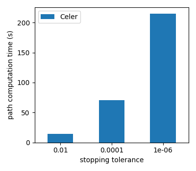

The example runs the Celer algorithm on sparse data.
Out:
Warning: this example may take more than 10 minutes to run
Loading data...
Starting path computation...
import time
import numpy as np
import matplotlib.pyplot as plt
from scipy import sparse
from celer import celer_path
from celer.examples_utils import download_preprocess_finance
from celer.plot_utils import plot_path_hist
print(__doc__)
print("Warning: this example may take more than 10 minutes to run")
print("Loading data...")
try:
X = sparse.load_npz("./data/finance_data_preprocessed.npz")
y = np.load("./data/finance_target_preprocessed.npy")
except FileNotFoundError:
print("Warning: downloading and preprocessing the Finance dataset.")
print("This may take several minutes")
download_preprocess_finance()
X = sparse.load_npz("./data/finance_data_preprocessed.npz")
y = np.load("./data/finance_target_preprocessed.npy")
print("Starting path computation...")
n_samples = X.shape[0]
alpha_max = np.max(np.abs(X.T.dot(y))) / n_samples
# construct fine or coarse grid of regularization parameters
fine = False
n_alphas = 100 if fine else 10
alphas = alpha_max * np.logspace(0, -2, n_alphas)
gap_freq = 10
prune = 1
verbose = 0
verbose_inner = 0
tols = [1e-2, 1e-4, 1e-6]
results = np.zeros([1, len(tols)])
for tol_ix, tol in enumerate(tols):
t0 = time.time()
res = celer_path(X, y, alphas=alphas, max_iter=100, gap_freq=gap_freq,
p0=100, verbose=verbose, verbose_inner=verbose_inner,
tol=tol, prune=prune, return_thetas=True)
results[0, tol_ix] = time.time() - t0
_, coefs, gaps, thetas = res
betas = coefs.T
labels = [r"\sc{Celer}"]
figsize = (7, 4)
fig = plot_path_hist(results, labels, tols, figsize, ylim=None)
plt.show()
Total running time of the script: ( 0 minutes 53.643 seconds)